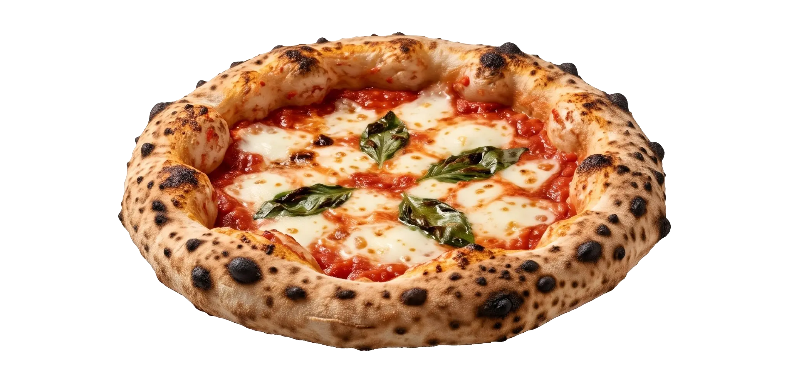

Napoli Pizza Calculator
Reset all?Pizza style

Hydration
Grams per ball
Fermentation
Mixing ingredients
End
Baking in oven
Flour strength
Fold sets
Salt
Kitchen temperature
Fridge temperature
At 2–3 °C the dough ferments much more slowly; the yeast is already raised for it. Use 4–5 °C if you can, and if the dough comes out barely grown, proof it at 25–27 °C.
Measure it with a thermometer in a glass of water. The dial isn't a temperature.
Yeast
How to test your yeast
Do this if a packet has been open a while, travelled or been stored somewhere warm, and always before a big batch.
- Stir ½–1 tsp sugar into about 100 ml warm water. Use 32–40 °C for dry yeast, and no hotter than 38 °C for fresh.
- Stir in 1 tsp yeast.
- Wait 10 minutes.
- Thick foam
- Within about 5 min for instant, or 10 min for fresh: it's healthy, so use it.
- Foam after 20–30 min
- Alive but weak. Replace it, or use the activated mix and watch the dough closely.
- Nothing after 15 min
- It's dead. Throw it away.
How you weigh the yeast
Dough check
Ingredients
Your start time and choices are saved in this browser on this device.